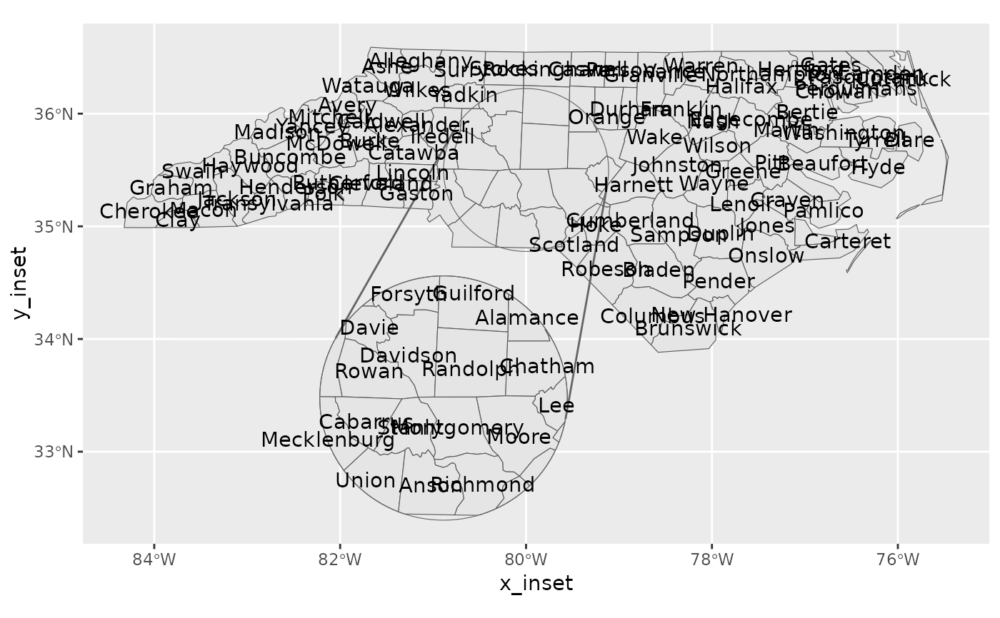

Extract coordinates from 'sf' objects (inset-aware)
Source:R/geom_sf_text_inset.R, R/stat_sf_coordinates_inset.R
stat_sf_coordinates_inset.RdReduce spatial data to coordinates in the same way as stat_sf_coordinates().
The result can then be used by geom_sf() or
geom_sf_inset() or any geom that needs x and
y aesthetics. As this is particularly useful for text, wrappers are
provided for geom_text() and geom_label().
Usage
geom_sf_text_inset(
mapping = aes(),
data = NULL,
stat = "sf_coordinates_inset",
position = "identity",
...,
where = "inset",
parse = FALSE,
check_overlap = FALSE,
na.rm = FALSE,
show.legend = NA,
inherit.aes = TRUE,
fun.geometry = NULL
)
geom_sf_label_inset(
mapping = aes(),
data = NULL,
stat = "sf_coordinates_inset",
position = "identity",
...,
where = "inset",
parse = FALSE,
na.rm = FALSE,
show.legend = NA,
inherit.aes = TRUE,
fun.geometry = NULL
)
stat_sf_coordinates_inset(
mapping = ggplot2::aes(),
data = NULL,
geom = "point",
position = "identity",
...,
inset = NA,
fun.geometry = NULL,
where = "inset",
na.rm = TRUE,
show.legend = NA,
inherit.aes = TRUE
)Arguments
- mapping, data, geom, position, na.rm, show.legend, inherit.aes, fun.geometry, ...
- stat, parse, check_overlap
- where
Specifies how the text position interacts with the inset.
"inset"means that any points in the inset area are drawn on the inset map,"base"puts them on the base map. This setting is merely a shorthand for setting the position aesthetics toafter_stat(x_inset)orafter_stat(x)respectively, so will have no effect if these are specified in the mapping.- inset
Inset configuration; see
configure_inset(). IfNA(the default), this is inherited from the coord (seecoord_sf_inset()).
Computed variables
- x
X dimension of the simple feature
- y
Y dimension of the simple feature
- x_inset
X dimension of the simple feature after inset transformation
- y_inset
Y dimension of the simple feature after inset transformation
- inside_inset
logical indicating points inside the inset viewport
- inset_scale
1 for points outside the inset, otherwise the configured inset scale parameter
Examples
library(ggplot2)
nc <- sf::st_read(system.file("shape/nc.shp", package = "sf"), quiet = TRUE)
ggplot(nc) +
geom_sf_inset() +
geom_inset_frame() +
geom_sf_text(
aes(x = after_stat(x_inset), y = after_stat(y_inset), label = NAME),
stat = "sf_coordinates_inset") +
coord_sf_inset(configure_inset(
shape_circle(
centre = sf::st_sfc(sf::st_point(c(-80, 35.5)), crs = 4326),
radius = 50
),
scale = 1.5, translation = c(-50, -140), units = "mi"
))
